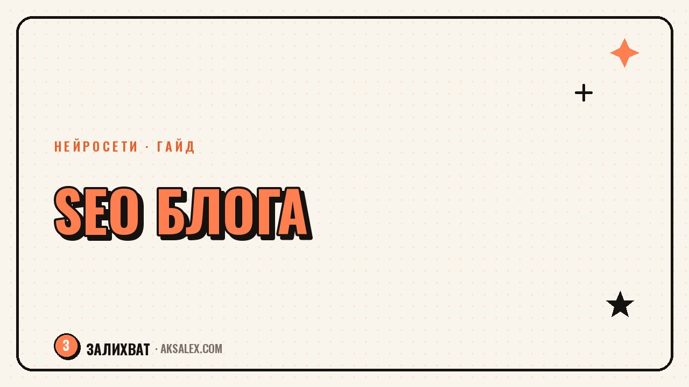

SEO для блога: как продвигать посты с ИИ

Ты можешь вести блог годами и не попадать в поиск, если тексты не заточены под запросы читателей. SEO - это не магия и не разовая настройка, а набор привычек: как ты называешь пост, о чём пишешь в первом абзаце и какие слова используешь внутри текста. Нейросети не заменят понимание аудитории, но здорово ускоряют рутину - от подбора ключевых слов до проверки готового текста. Разберём, как встроить их в процесс, не потеряв смысл и живой голос.
Зачем блогу вообще думать про SEO
Соцсети показывают пост подписчикам один-два дня, а потом он тонет в ленте. Статья в поисковой выдаче работает месяцами: человек вводит запрос в Google или Яндекс, находит твой текст и приходит на сайт сам, без рекламы и охватов. Это стабильный источник новых читателей.
Проблема в том, что поисковик не читает мысли - он ориентируется на слова, структуру и то, насколько текст отвечает на вопрос человека. Здесь и пригодятся нейросети: помогают понять, что ищут люди, и оформить текст так, чтобы поисковик его правильно считал.
Подбор ключевых слов через нейросеть
Раньше подбор ключей требовал отдельных платных сервисов. Сейчас можно попросить нейросеть накидать список формулировок, которые использует твоя аудитория, когда ищет ответ на конкретную проблему. Дай ей контекст: тему блога, портрет читателя и цель поста - и получишь черновой список запросов.
Как сформулировать задание нейросети
- Опиши тему поста одним предложением и укажи, кто читатель
- Попроси разбить ключи на группы: informационные и коммерческие запросы
- Уточни, что нужны формулировки живым языком, а не канцелярит
- Попроси добавить длинные хвостовые запросы из трёх-четырёх слов
Дальше список нужно проверить самому: убрать нерелевантные варианты и оставить формулировки, которые реально похожи на то, как говорит твоя аудитория. Нейросеть даёт черновик, а не готовое решение.
Заголовок, мета-описание и структура текста
Заголовок - это то, что видит человек в выдаче до перехода на сайт. Он должен содержать главный ключ и при этом звучать как обычная фраза, а не набор слов для робота. Мета-описание - короткий текст под заголовком в выдаче, который объясняет, что читатель получит внутри статьи.
| Элемент | Что важно |
|---|---|
| Заголовок (H1) | Главный ключ в начале, до 60 символов, без кликбейта |
| Мета-описание | До 160 символов, отвечает на вопрос из запроса |
| Подзаголовки (H2, H3) | Разбивают текст на логичные блоки, облегчают чтение |
| Первый абзац | Сразу отвечает на суть запроса, без долгого вступления |
Нейросеть хорошо помогает с черновиком заголовков и мета-описаний: попроси несколько вариантов и выбери тот, что звучит естественно. Не бери первый вариант не глядя - иногда нейросеть тянется к штампам вроде «топ секретов» или «узнай прямо сейчас».
Как проверить готовый текст перед публикацией
После того как текст написан, полезно прогнать его через нейросеть ещё раз - но уже в роли редактора, а не автора. Попроси её проверить, встречается ли ключевой запрос в первом абзаце, в одном из подзаголовков и ближе к концу текста. Это не значит впихивать ключ насильно - если фраза не ложится в предложение естественно, лучше взять синоним.
Текст, написанный для поисковика, а не для читателя, обычно и читателю не нравится, и в топ не попадает - поисковые системы давно умеют отличать живой текст от набора ключей.
Ещё стоит проверить внутренние ссылки: если у тебя уже есть статья на смежную тему, сошлись на неё из нового поста. Это помогает читателю остаться на сайте дольше и сигналит поисковику, что у блога есть структура, а не разрозненные тексты.
Частые ошибки при SEO-продвижении блога
Самая частая ошибка - переспам ключевыми словами. Если фраза «нейросети для блога» повторяется в каждом втором предложении, текст читается тяжело, и поисковик это тоже считает минусом, а не плюсом.
- Писать заголовок ради кликов, а не по сути статьи
- Игнорировать структуру - сплошной текст без подзаголовков
- Копировать формулировки конкурентов один в один
- Забывать про мобильную версию сайта - большинство читателей заходят с телефона
- Публиковать и забывать - без обновления старых постов трафик со временем проседает
SEO редко даёт результат после одного поста. Это накопительный эффект: чем больше у тебя качественных, структурированных статей на темы, которые реально ищут люди, тем увереннее блог поднимается в выдаче.
С чего начать сегодня
Не нужно переписывать весь блог сразу. Возьми одну свежую или популярную статью, прогони её через шаги выше: проверь заголовок, мета-описание, структуру и плотность ключей. Дальше применяй тот же подход к каждому новому посту - и через несколько месяцев увидишь разницу в органическом трафике.
Частые вопросы
Может ли нейросеть полностью взять на себя SEO блога?
Нет. Она ускоряет рутину - подбор ключей, черновики заголовков, проверку структуры, - но решения о теме, тоне и итоговом тексте остаются за тобой. Поисковики ценят экспертность и живой голос, а не автоматически сгенерированный текст.
Сколько ключевых слов должно быть в одной статье?
Жёсткого числа нет. Обычно хватает одного главного запроса и двух-трёх смежных формулировок, вписанных туда, где они звучат естественно - в заголовке, подзаголовках и паре абзацев текста.
Нужно ли менять уже опубликованные статьи под SEO?
Да, это называется обновлением контента. Раз в несколько месяцев стоит просматривать старые посты: обновлять факты, добавлять внутренние ссылки и поправлять заголовки, если появились более точные формулировки запросов.
Влияет ли скорость сайта на позиции в поиске?
Да, это один из факторов ранжирования. Тяжёлые изображения и медленная загрузка страницы могут снижать позиции, даже если текст написан хорошо. Стоит проверять скорость сайта отдельно от работы с текстом.
Как понять, что SEO-работа начала приносить результат?
Смотри на органический трафик из поисковых систем в аналитике сайта за несколько месяцев, а не за неделю. Рост обычно постепенный: сначала статья попадает на вторую-третью страницу выдачи, потом постепенно поднимается выше при регулярных обновлениях.
а не вручную